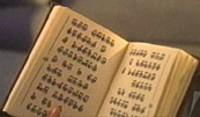

|
Vissiani
|
|
|
|
|
 |
|
|
|
|
|
 |
Specie incontrata dall'Enterprise
nel febbraio del 2153
originaria dal sistema Vissia, a più di 25 anni luce dalla
posizione in cui incontrano l'Enterprise.
Tecnologicamente avanzata, ha la particolarità di essere composta da tre sessi,
il terzo dei quali, il cogenitore (circa il tre per cento della popolazione), è
coadiuvante nella procreazione che avviene tra altri due sessi. Una volta che il
cogenitore ha aiutato la procreazione in una coppia, viene assegnato ad un'altra
coppia. Il cogenitore viene trattato più come una sorta di animale da
riproduzione che come una persona vera e propria, anche se ha le stesse capacità
cerebrali.
I Vissiani hanno una grande capacità di imparare e memorizzare gran parte di ciò
che leggono e riescono a leggere molto rapidamente, tanto che per loro è
possibile leggere tutta la produzione di Shakespeare in meno di un giorno.
Per i Vissiani ha molta più importanza il profumo del gusto nel cibo e hanno un
senso del gusto e dell'olfatto meno influenzabile di quello umano per quanto
riguarda i cibi speziati e piccanti.
I Vissiani non si allontanano molto dal loro sistema solare perché preferiscono
conoscere bene ciò che hanno intorno a loro.
Il motore a curvatura dei Vissiani emette radiazioni omicron, dannose agli
umani, ma facilmente contrastabili con una cura adatta
a lungo termine. Gli scafi delle loro navi sono composti principalmente da
trinesio.